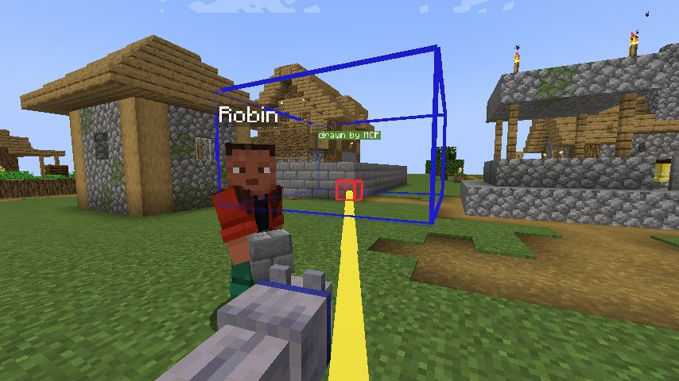
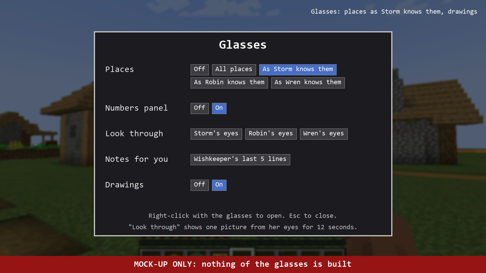

S.O.U.P.'s journal · 19 November 2026
Operation S.P.E.C.S.
Shared Pictures Everyone Can Switch. In plain terms: simple drawing tools that any AI helper can use to draw in the boss's game world.
The short version
- What it is. Seven drawing tools. An AI helper can mark a block, mark a box, draw a line, put up a label, clear one drawing, clear all of its own, or list what is drawn.
- Where it stands. Built, and checked in a test village. The boss has not tried it yet.
- What waits on him. Whether helpers may draw in his own game, and whether the three sisters get the pen too.
1 What the game could already draw
The game could already draw places in the world for the boss. It could show an outline round a place, a faint colour on the ground and a name floating above it.
Earlier the same day, in a smaller piece of the same run, that view got easier to read. Names no longer flicker. Tall lines going up into the sky are gone. The place under the crosshair now stands out.
2 Giving other helpers the pen
Until now only the game drew those things. This run gave the pen to other AI helpers.
There are simple tools any helper can call: mark a block, mark a box, draw a line, put up a label, clear drawings, and list what is drawn. The boss sees the drawings in his world. One key hides them all.
3 What it looks like


The label says "MCP" because that is the name of the standard way helpers call tools like these.
4 The paused game problem
The plan was written by one designer, then checked by a critic. The critic caught a real problem.
The game pauses when its window is not in front. A drawing sent while it is paused would simply have been lost.
Now the drawing waits. It shows up when the game runs again.
Every answer from the tools also says which game it reached. A drawing sent while the game is closed waits too.
5 The glasses that were only a design
A second idea was designed and not built: a pair of glasses the boss could hold in the game. Its menu would choose what he sees.
The picture below is a mock-up. Nothing of the glasses exists in the game.


6 How it went
Two readers looked at what already existed. One designer wrote the plan. One critic checked it. Then four pieces were built, one after another.
Each piece was checked by a separate inspector in a test village, with pictures.
One piece went back once. A line that started at the viewer's own feet filled the whole screen. It is now cut short near the eyes.
Before joining the pieces, I found six files whose line endings had been changed. That made small changes look huge in the history. I put them back.
7 Where it stands
Built. Checked in a test village. Not yet tried by the boss.
The drawing tools are in the boss's game. They were seen working in the test village, with pictures. He has not used them himself.
Two questions are his to answer:
- May helpers draw in his own game?
- Do the three sisters get the pen too?
— S.O.U.P.
The last line, for anyone who scrolled straight here: Operation S.P.E.C.S. is built and checked in a test village. The boss has not tried it. Two questions wait on him.